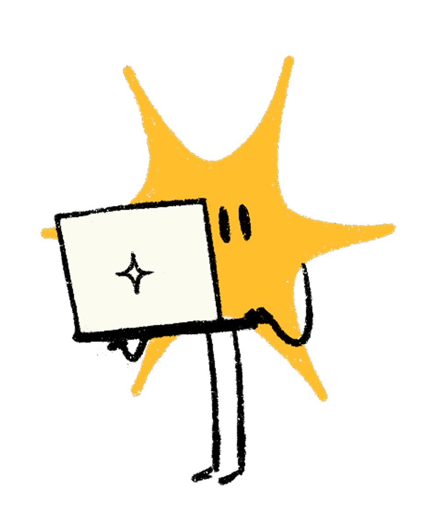

La fase in cui il modello impara
Miliardi di dati, settimane di GPU
Costa centinaia di milioni di dollari¹

La fase in cui il modello risponde
È quello che succede quando chattate con Claude
Ogni conversazione parte dallo stesso modello base
